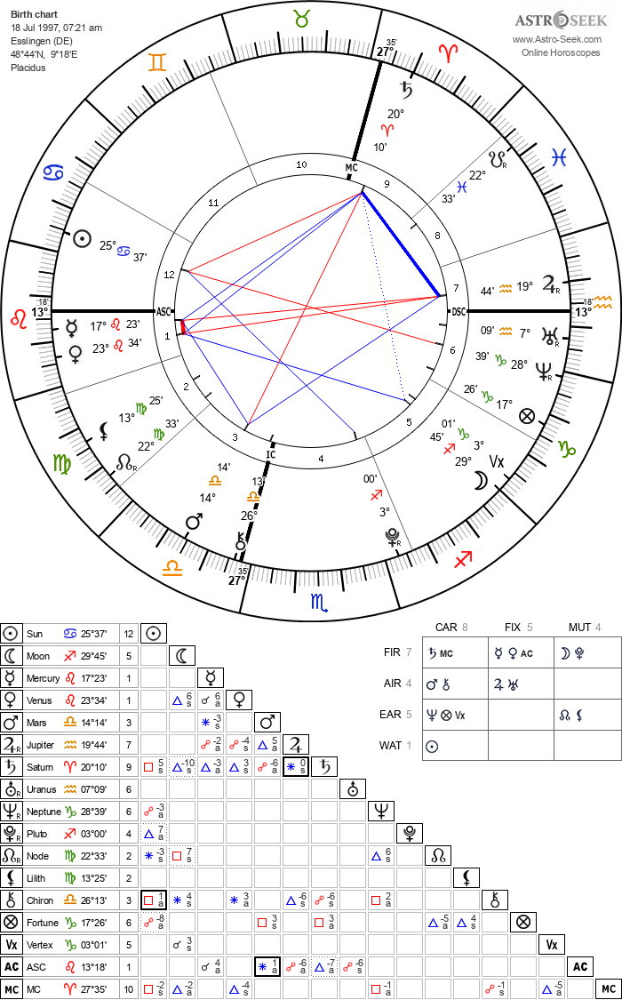
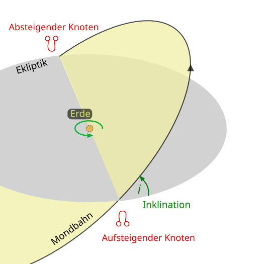

Das Sonnensystem besteht aus Sonne, Planeten und Monden. Die Erde dreht sich auf einer Ebene um die Sonne. Diese Ebene nennt man Ekliptik. Alle anderen Planeten drehen sich ebenso ungefähr auf dieser Ebene um die Sonne. Da sich die Planeten teilweise 10 Grad über oder unter der Ekliptik bewegen, entsteht ein Gürtel um die Ekliptik, der sogenannte Tierkreis (Zodiak). Der Tierkreis ist eine 20 bis 30 Grad breite Zone um die Ekliptik, in der sich die Sonne, der Mond und alle Planeten bewegen.
Das Radix-Horoskop zeigt die Positionen der Himmelskörper zu einem Zeitpunkt relativ zum Ort.
Der Horoskopkreis zeigt die Ekliptik (die scheinbare Bahn der Sonne), nicht die gesamte Himmelskugel.
Es ist aus der Perspektive einer Person an diesem Ort die nach Süden blickt.
Die Blickrichtung ist nach Süden, wenn man sich auf der nördlichen Halbkugel befindet und nach Norden wenn man sich auf der südlichen Halbkugel befindet.
Dementsprechend ist Osten links, Westen rechts, Süden oben und Norden unten.
Im Osten geht die Sonne auf, im Westen geht sie unter. Im Süden steht sie am höchsten Punkt. Im Norden ist sie nicht sichtbar.
Genauso ist es auch mit den Planeten, die sich auf der gleichen Ebene bewegen.
Die 12 Häuser sind in 30 Grad Abschnitte unterteilt, die von der Blickrichtung aus gezählt werden.
In den Häusern 7 bis 12 sieht man die Planeten, in den Häusern 1 bis 6 nicht.
Links, im Osten, befindet sich der Aszendent, der Aufsteigende, der den Beginn des ersten Hauses markiert.
Rechts, im Westen, befindet sich der Deszendent, der Absteigende, der den Beginn des siebten Hauses markiert.
Die Himmelskugel ist die gedachte Hohlkugel die den Beobachter umgibt.
Der Himmelsmeridian ist, aus der Beobachterperspektive, der senkrechte Kreis der durch den Nordpunkt am Horizont, den Zenit (direkt über einem), den Südpunkt am Horizont und den Nadir (direkt unter einem) verläuft.
Die Sonne zieht eine Kurve über dem Himmel, die sogenannte Tagesbahn. Diese Kurve ist NICHT die Ebene des Horoskopes und auch nicht die Ekliptik.
Die Ekliptik ist die Bahn der Erde um die Sonne, sie ist ein schräger Kreis um einen herum.
Sie schneidet die Himmelskugel in einem schrägen Kreis.
Dieser Kreis ist der Horoskopkreis.
Dadurch, dass die Ekliptik schräg geneigt ist, schneidet sie den Himmelsmeridian an zwei Punkten, die als Medium Coeli (MC) und Imum Coeli (IC) bezeichnet werden.
Der Medium Coeli (MC), die Mitte des Himmels, markiert den höchsten Punkt der Ekliptik, der im Süden liegt,
und der Imum Coeli (IC), die Tiefe des Himmels, markiert den tiefsten Punkt der Ekliptik, der im Norden liegt.
Der Tierkreis (Zodiak) im Horoskop ist eine 20 bis 30 Grad breite Zone um die Ekliptik, in der sich die Sonne, der Mond und die Planeten bewegen.
Er ist in 12 Abschnitte von je 30 Grad unterteilt, die als Tierkreiszeichen bezeichnet werden.
Eigentlich sind die Tierkreissternbilder unterschiedlich groß (die Jungfrau ist rießig, der Widder klein).
Die Tierkreiszeichen jedoch sind rein mathematische Messfelder von exakt 30 Grad Breite, die für das Hororskop benutzt werden, um die Position der Planeten genau zu bestimmen.
Es gibt 4 Elemente (Feuer=rot, Erde=grün, Luft=orange, Wasser=blau).
Sie folgen immer derselben Reihenfolge: Feuer, Erde, Luft, Wasser, Feuer, Erde, Luft, Wasser, Feuer, Erde, Luft, Wasser.
Das Horoskop liest man gegen den Uhrzeigersinn. D.h. jedes Tierkreiszeichen beginnt rechts bei 0 Grad und dann zählt man nach links gegen den Uhrzeigersinn bis 29 Grad hoch.
Im linken Horoskop sieht man Sonne: Krebs 25° 37°.
Das bedeutet, dass die Sonne im Tierkreiszeichen Krebs steht, 25 Grad und 37 Bogenminuten (maximal 59) von 0 Grad entfernt.
Die Linien in der Mitte zeigen die Winkelbeziehungen bzw. Verbindungen zwischen den Planeten an.
Die Farbe hängt allein vom Winkel ab. Man misst diesen Winkel vom Mittelpunkt des Kreises aus.
Rote Linien (Spannung) enstehen bei einem "harten" Winkel von 90 Grad (Quadrat) oder 180 Grad (Opposition).
Bei Opposition erlaubt man oft bis zu 8 bis 10 Grad Abweichung, bei Quadrat 7 bis 8 Grad Abweichung.
Blaue Linien (Harmonie) enstehenen bei einem "weichen" Winkel von 60 Grad (Sextil) oder 120 Grad (Trigon).
Beim Trigon erlaubt man Abweichungen bis ca. 8 Grad, beim Sextil nur 4 bis 6 Grad.
Nur wenn die Planeten innerhalb dieser Toleranzgrenzen liegen, werden sie als Aspekte bezeichnet und mit Linien miteinander verbunden.
Je dicker die Linie ist, desto genauer ist der Winkel, also desto geringer ist die Abweichung.
Das bedeutet je dicker die Linie, desto stärker ist die Verbindung zwischen den Planeten.
Dicke Linien prägen den Charakter eines Menschen stärker als dünne Linien.
Neben den 4 Elementen gibt es auch 3 Qualitäten bzw. Kreuze (kardinal, fix, veränderlich).
Kardinal (Die Macher) sind Widder, Krebs, Waage und Steinbock. Sie wollen führen, initiieren, starten, anpacken.
Sie markieren jeweils den Beginn einer Jahreszeit (Frühling, Sommer, Herbst, Winter).
Da alle vier "bestimmen" wollen, geraten sie oft aneinander, also Konflikte, Spannungen, rote Linien.
Fix (Die Bewahrer) sind Stier, Löwe, Skorpion und Wassermann. Sie wollen bewahren, erhalten, stabilisieren, festhalten.
Sie markieren jeweils die Mitte einer Jahreszeit (Frühling, Sommer, Herbst, Winter).
Veränderlich (Die Anpasser) sind Zwillinge, Jungfrau, Schütze und Fische. Sie wollen anpassen, verändern, flexibel sein, loslassen.
Sie markieren jeweils den Übergang von einer Jahreszeit zur nächsten (Frühling zu Sommer, Sommer zu Herbst, Herbst zu Winter, Winter zu Frühling).
Rot passiert meistens zwischen Zeichen derselben Qualität, aber unterschiedlichen Elementen (z.B. Krebs und Widder sind beide "kardinal", sie wollen beide führen aber in unterschiedliche Richtungen)
Blau passiert meistens zwischen Zeichen desselben Elements (z.B: Krebs und Skoprion sind beide Wasser --> blindes Verständnis).
Sie verbinden meist Zeichen, deren Qualitäten harmonieren (z.B. Kardinal und Veränderlich), vor allem wenn sie zum gleichen Element gehören.
Wenn zwei Zeichen die gleiche Qualität haben, haben sie den gleichen "Rythmus" oder Arbeitsmodus.
Das sorgt meistens für Spannung.
Zwei Kardinale Zeichen wollen beide gleichzeitig das Steuer übernehmen.
Zwei Fixe Zeichen wollen beide absolut nicht nachgeben.
Zwei veränderliche Zeichen wollen beide gleichzeitig loslassen, was zu Unsicherheit und mangelnde Entscheidungskraft führen kann.
Wenn zwei Zeichen das gleiche Element haben, haben sie die gleiche "Sprache" oder Ausdrucksweise. Sie verstehen sich blind, auch wenn sie unterschiedliche Qualitäten haben.
Das Ergebnis ist, dass sie ein Trigon bilden, also eine harmonische Verbindung. Hier fließt Energie ohne Widerstand.
Beim Sextil sind die Elemente unterschiedlich, aber ergänzend (z.B. Feuer und Luft, Erde und Wasser).
Die Qualitäten sind auch unterschiedlich (z.B. kardinal und fix, kardinal und veränderlich, fix und veränderlich).
Das Ergebnis: Man ist verschieden genug, um sich nicht zu langweilen, aber ähnlich genug, um sich gegenseitig zu befruchten.
Das ist eine sehr produktive Harmonie.
Eine Konjunktion (0°) in Löwe im 1. Haus bedeutet:
2 Kräfte bzw. Planeten wollen beide gleichzeitig die Hauptrolle spielen

Der Mondknoten ist der Schnittpunkt der Mondbahn mit der Ekliptik. Er hat eine wichtige Bedeutung in der Astrologie.
Genau an diesen Schnittpunkten entstehen Sonnenfinsternisse und Mondfinsternisse
Der aufsteigende Mondknoten (Nordknoten) symbolisiert die Lebensaufgabe, die Entwicklung und das Wachstumspotential eines Menschen.
Er zeigt an, welche Qualitäten und Erfahrungen man in diesem Leben entwickeln und integrieren soll, um sein volles Potential zu entfalten.
Es zeigt die Zukunftsenergie an, also wo man hin soll.
Der absteigende Mondknoten (Südknoten) symbolisiert die Vergangenheit, die Gewohnheiten, die Komfortzone und die karmische Vergangenheit eines Menschen.
Er zeigt an, welche Qualitäten und Erfahrungen man aus früheren Leben oder aus der Vergangenheit mitbringt und loslassen sollte, um sich weiterzuentwickeln.
Es zeigt die Vergangenheitsenergie an, also wo man herkommt.
Der aufsteigende Mondknoten wird auch Rahu genannt, der Drachenkopf der die Sonne verschlingt (Sonnenfinsternis).
Der absteigende Mondknoten wird auch Ketu genannt, der Drachenschwanz der loslässt.
Das kommt aus der antiken indischen und arabischen Astronomie.
Meine Mondknoten:
Ich habe den aufsteigenden Mondknoten in Jungfrau und den absteigenden Mondknoten in Fische.
Es beschreibt von Chaos zur Klarheit, vom Gefühl zur Struktur von Auflösung zur Präzision.
Südknoten in Fische:
Typische Muster sind sehr feinfühlig, intuitiv, emapthisch, starke Fantasie, Tagträume, Tendenz sich zu verlieren (in Gefühlen und Gedanken), Wunsch, alles fließen zu lassen statt zu strukturieren.
Nordknoten in Jungfrau:
Meine Aufgabe sind Ordnung schaffen, Verantwortung übernehmen, präzise werden, Dinge konkret machen.
Ich komme aus einer Welt von Intuition, Gefühl, Chaos, Grenzenlosigkeit, Spiritualität und Empathie.
Ich soll mich entwickeln zu Klarheit, Struktur, Analyse, Ordnung, Präzision, Alltagstauglichkeit, Realismus